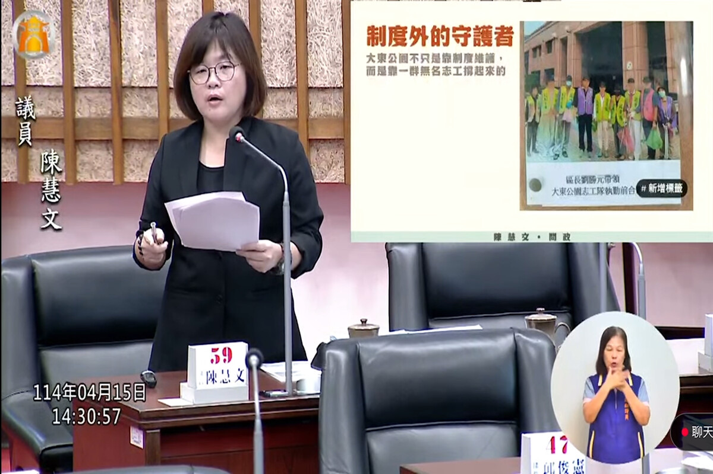

背景與說明
座落於鳳山光遠路與博愛路交會處的大東公園（大東濕地公園），林木蓊鬱、池水澄澈，素有「城市忘憂森林」美譽，是無數市民休閒散步與親子踏青的綠色心臟。然而這片生態美景的維繫，除了公部門有限的定期割草清潔外，更多仰賴在地熱心志工風雨無阻的默默巡守與水池清疏。
議會正式決議採納陳慧文提案送請市府積極辦理。陳慧文持續監督工務局建立大東公園志工常態性溝通聯繫窗口，落實安全裝備挹注與跨局處協同維護機制，凝聚社區守護力量，確保大東濕地公園水岸生態與人文景緻長久常青。


推動歷程
重要進度
提案建立志工支持機制
陳慧文於議會正式提案，要求工務局針對大東公園等公共綠地建立完備志工培力、保險與資源支持體系。
議會決議送請市府研辦